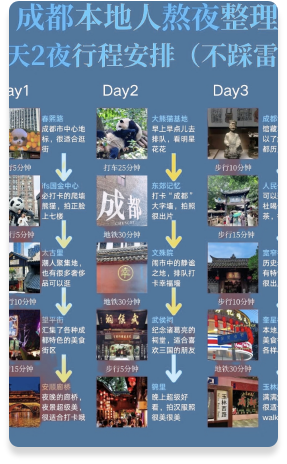
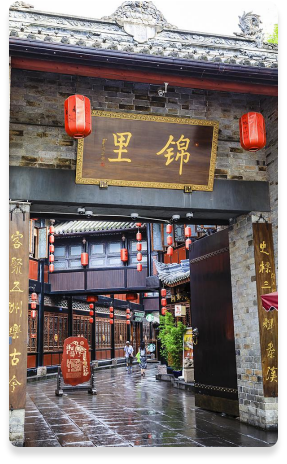
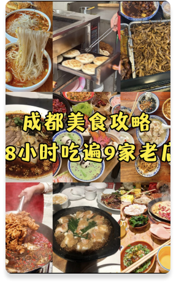
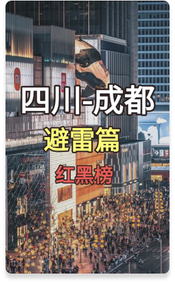
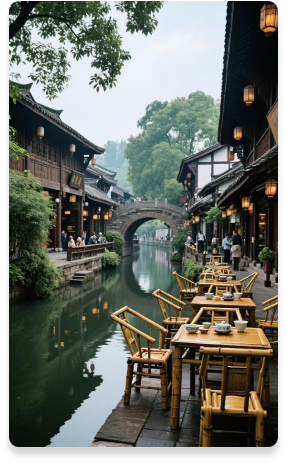
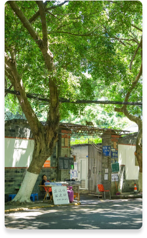
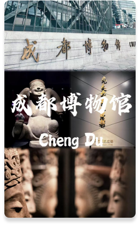

成都3天2夜攻略🔥吃遍地道美食+小众打卡！巴适得板～
成都，一座来了就不想走的城市！3天2夜带你吃遍苍蝇馆子、打卡小众景点，避开人挤人，体验最地道的成都生活～

成都，一座来了就不想走的城市🌆｜慢生活图鉴
少不入川，老不出蜀”，成都的巴适，藏在巷子的茶香里、火锅的沸腾里、熊猫的憨态里。这里，时间像被调慢了0.5倍

成都48小时极限逛吃地图‼️本地人带路版
本地人私藏的48小时暴走攻略，从早到晚不踩雷。凌晨5点抢头锅的甜水面，中午排队的社区火锅，深夜的鬼饮食摊...跟着土著吃才够味！

成都景点红黑榜‼️本地人教你避开人挤人，玩出高级感📸
宽窄巷子只拍照不消费？青城山后山比前山人少景更仙！连熊猫基地都有不排队的隐藏入口，这份避坑指南快收好～
🌟【成都48小时暴走攻略】本地人私藏玩法大公开！
两天玩出三天内容！凌晨看花花要带什么？祠堂街的抄手哪家最鲜？玉林路的酒馆怎么选？连转场打车路线都帮你规划好了！

💫【成都慢生活图鉴】巴适得板的三天两夜
学成都人早上去鹤鸣茶社摆龙门阵，下午在人民公园掏耳朵，深夜找家24小时蹄花汤续命...这才是真正的成都节奏～

在成都的街头，我拍到了电影里的烟火气🎞️
文殊院红墙的光影，鸳鸯楼交错的楼梯，北书院街晾晒的腊肠...每条老街都在讲述自己的故事，随手拍都是大片！

🌟【成都博物馆｜穿越3000年的古蜀奇幻之旅】
从青铜人像到汉代画像砖，连文创雪糕都做成青铜面具。每周五晚的博物馆奇妙夜，灯光下的文物会讲故事～